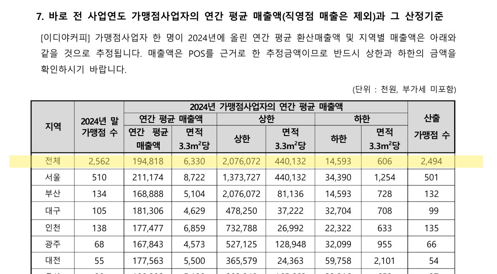
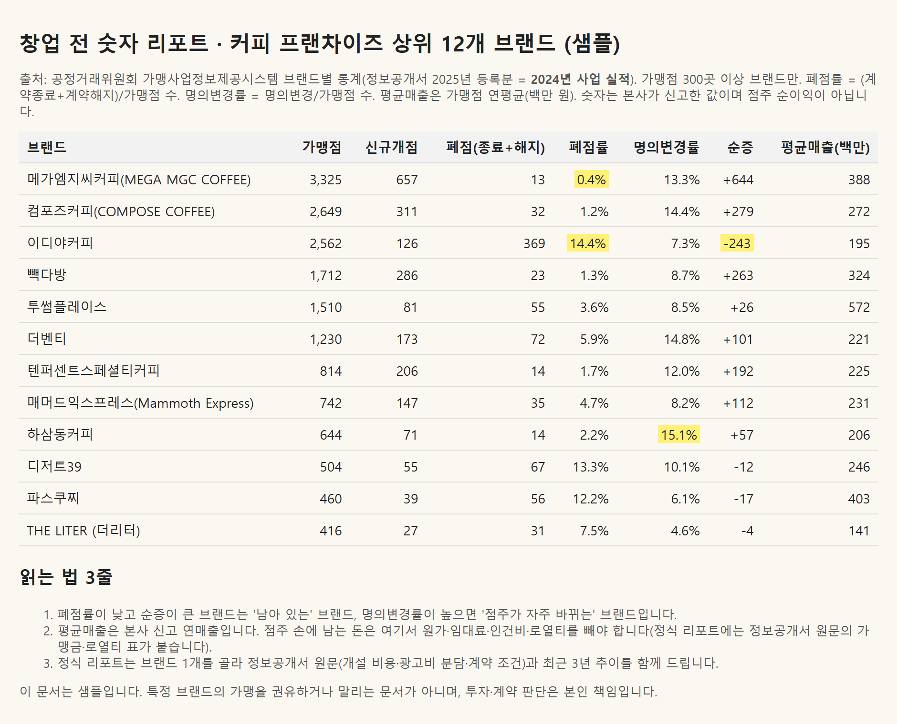

상담에서 들은 숫자, 공시와 맞는지 확인해 보셨나요?
가맹 상담을 받은 브랜드 1~3개를 알려 주시면, 본사에서 들은 숫자와 공정거래위원회 정보공개서·DART 원문 숫자를 "들은 숫자 | 공시 숫자 | 차이" 세 열로 나란히 옮기고 출처를 붙여 드립니다. 결론은 점수나 등급이 아니라 계약 전에 본사에 물어볼 질문 10개입니다.
브랜드 1~3개, 29,000원(부가세 포함). 먼저 무료 1쪽 미리보기를 보시고 정하시면 됩니다 — 신청 양식으로 가기.
원문은 이렇게 생겼습니다

이디야커피 정보공개서 11쪽1. 형광펜 줄의 평균 매출 194,818천 원은 본사가 POS로 추정한 매출이고, 같은 표에서 상한은 2,076,072천 원, 하한은 14,593천 원입니다. 평균 하나만 듣고 오시면 이 폭을 놓칩니다.
샘플 · 커피 프랜차이즈 12개 브랜드

공정거래위원회 가맹사업정보제공시스템 브랜드별 통계2. 본사가 신고한 숫자이며 점주 순이익이 아닙니다.
받으시는 것
| ① 견적 대조 | 상담에서 들은 가맹금·교육비·인테리어·로열티·광고비 분담·위약금을 정보공개서 원문 숫자와 항목별로 비교 |
| ② 3년 추이 | 가맹점 수·신규 개점·폐점·명의변경·평균매출, 같은 업종 안에서의 위치 |
| ③ 손익 시나리오 | 신청자가 알려 주신 임대료·원가율로 계산한 시나리오 3개(예상 수익을 단정하지 않습니다) |
| ④ 질문 목록 | 숫자 차이에서 나온, 본사에 물어볼 질문 10개 |
모든 수치에 출처와 기준연도를 붙입니다. 본사가 법인이면 금융감독원 전자공시(DART) 감사보고서 숫자도 함께 봅니다.
이 서비스가 아닌 것
- 가맹거래사 자문이나 법률 검토가 아닙니다. 계약서 검토는 가맹거래사·변호사, 또는 공정거래조정원 가맹종합지원센터(무료)에 받으세요.
- 특정 브랜드 가맹을 권하거나 말리지 않습니다. 판단은 본인 몫입니다.
- 공식 기관이나 인증 서비스가 아닙니다. 공개된 자료를 모아 정리한 개인 작업입니다.
참고: 가맹사업법상 정보공개서를 받은 뒤 14일(가맹거래사·변호사 자문 시 7일)이 지나야 계약·가맹금 지급이 가능합니다. 그 기간 안에 보시는 것을 권합니다.
신청
아래 양식을 보내 주시면 먼저 무료 1쪽 미리보기를 이메일로 드립니다. 보시고 마음에 드실 때만 정식 대조표(29,000원)를 받으시면 됩니다. 지금은 결제를 받지 않습니다.
수집 항목: 이메일, 관심 브랜드·지역·예산 구간. 이용 목적: 미리보기·대조표 발송. 보관: 시험 종료(2026-11-30) 후 파기. 동의하지 않으셔도 되지만, 그 경우 미리보기를 보내 드릴 수 없습니다. 광고성 연락은 보내지 않습니다. 이 페이지는 방문 수만 세는 외부 카운터(hits.sh)를 씁니다.
2. 공정거래위원회 가맹사업정보제공시스템 브랜드별 통계, 2025년 등록분 = 2024년 사업 실적. 폐점률 = (계약종료+계약해지) ÷ 가맹점 수, 명의변경률 = 명의변경 ÷ 가맹점 수.
운영: 유튜브 「숫자가게」 · 문의는 신청 양식으로